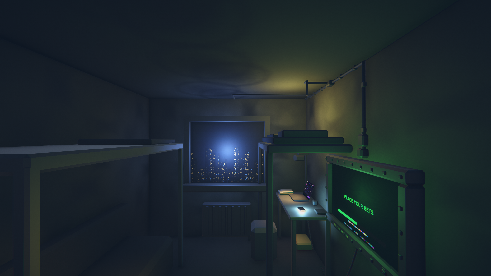
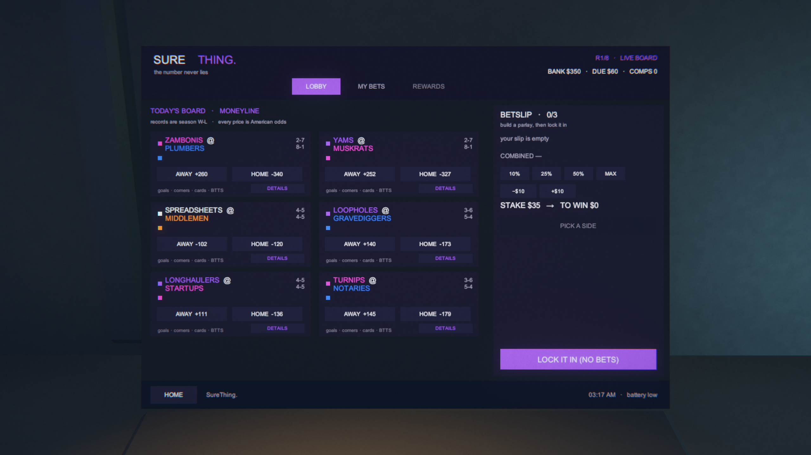
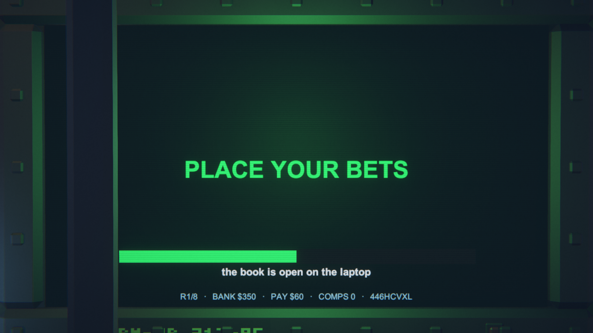

A cramped bunker at night, in a wealthy high-tech city that has no use for the occupant. The room is rotting; the city outside is neon and functioning; the screens are the only things that work. Peeling paint, exposed black conduit, riveted steel, bolted brackets, chipped institutional paint, two heavy bunk frames, a deep-set window onto a neon skyline, a battered metal desk with the laptop and an ashtray of butts. Rendering register: painterly semi-realistic. Dark comedy — the machines are nicer than the life.
NOT AUTHORITY. These are the shipped runtime views. The laptop still shows the superseded violet package; the TV still ships green against its approved cold white-grey; and the grade reads cool-blue overall, which the 2026-07-28 palette law calls the explicit failure mode. Treat them as current-state evidence only.